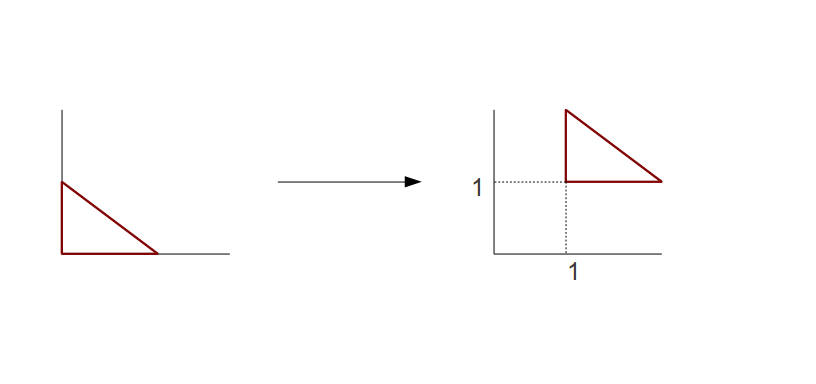
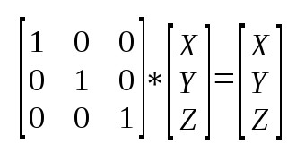
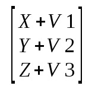
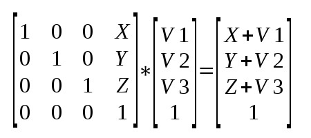

Background
In this tutorial we start looking at the various transformations that take an object in 3D and enable it to be displayed on screen while keeping the illusion of depth in the scene. The common way to do this is to represent each transformation using a matrix, multiply them one by one and then multiply the vertex position by the final product. Each tutorial will be dedicated to examining one transformation.
Here we take a look at the translation transformation which is responsible to moving an object along a vector of any length and direction. Let's say you want to move the triangle in the left picture to the location on the right:
One way to do it is to provide the offset vector (in this case - 1,1) as a uniform variable to
the shader and simply add it to the position of each processed vertex.
However, this breaks the method of multiplying a group of matrices into
one to get a single comprehensive transformation. In addition, you will
see later that translation is usually not the first one so you will have to
multiply the position by the matrix that represent the transformations
before translation, then add the position and finally multiple by the
matrix that represent the transformation that follow translation. This
is too awkward. A better way will be to find a matrix that represents
the translation and take part in the multiplication of all matrices.
But can you find a matrix that when multiplied by the point (0,0), the
bottom left vertex of the triangle on the left, gives the result (1,1)?
The truth is that you can't do it using a 2D matrix (and you cannot do
it with a 3D matrix for (0,0,0) ). In general we can say that what we
need is a matrix M that given a point P(x,y,z) and a vector V(v1,v2,v3)
provides M * P=P1(x + v1, y + v2, z + v3). In simple words this means
that matrix M translates P to location P+V. In P1 we can see that each
component is a sum of a component from P and the corresponding
component of V. The left side of each sum equation is provided by the
identity matrix:
I * P = P(x,y,z). So it looks like we should start with the identity
matrix and find out the changes that will complete the right hand side
of the sum equation in each component (...+V1, ...+V2, ...+V3). Let's
see how the identity matrix looks like:

We want to modify the identity matrix such that the result will be:
There really isn't an easy way to do this if we stick to 3x3 matrix, but if we change to a 4x4 matrix we can do the following:
Representing a 3-vector using a 4-vector like that is called homogenous coordinates and is very popular and useful for 3D graphics. The fourth component is called 'w'. In fact, the internal shader symbol gl_Position that we have seen in the previous tutorial is a 4-vector and the w component has a very important role for making the projection from 3D to 2D. The common notation is to use w=1 for points and w=0 for vectors. The reason is that points can be translated but vectors cannot. You can change the length of a vector or its direction but all vectors with the same length/direction are considered equal, regardless their "starting position". So you can simply use the origin for all vectors. Setting w=0 and multiplying the translation matrix by the vector will result in the same vector.
Source walkthru
struct Matrix4f {
float m[4][4];
};
We added a 4x4 matrix definition to math_3d.h. This will be used for most of our transformation matrices from now on.
GLuint gWorldLocation;
We use this handle to access the world matrix uniform variable in the shader. We name it 'world' because what we are doing to the object is moving (translating) its location to where we want it in the coordinate system of our virtual "world".
Matrix4f World;
World.m[0][0] = 1.0f; World.m[0][1] = 0.0f; World.m[0][2] = 0.0f; World.m[0][3] = sinf(Scale);
World.m[1][0] = 0.0f; World.m[1][1] = 1.0f; World.m[1][2] = 0.0f; World.m[1][3] = 0.0f;
World.m[2][0] = 0.0f; World.m[2][1] = 0.0f; World.m[2][2] = 1.0f; World.m[2][3] = 0.0f;
World.m[3][0] = 0.0f; World.m[3][1] = 0.0f; World.m[3][2] = 0.0f; World.m[3][3] = 1.0f;
In the render function we prepare a 4x4 matrix and poplulate it according to the explanation above. We set v2 and v3 to zero so we expect no change in the Y and Z coordinate of the object and we set v1 to the result of the sinus function. This will translate the X coordinate by a value that swings nicely between -1 and 1. Now we need to load the matrix into the shader.
glUniformMatrix4fv(gWorldLocation, 1, GL_TRUE, &World.m[0][0]);
This is another example of a glUniform* function to load data into uniform shader variables. This specific function loads 4x4 matrices and there are also versions for 2x2, 3x3, 3x2, 2x4, 4x2, 3x4 and 4x3. The first parameter is the location of the uniform variable (retrieved after shader compilation using glGetUniformLocation()). The second parameter indicates the number of matrices we are updating. We use 1 for one matrix but we can also use this function to update multiply matrices in one call. The third parameter often confuses newcomers. It indicates whether the matrix is supplied in row-major or column-major order. Row-major means the matrix is supplied row after row, starting from the top. Column-major is the same but in columns. The point is that C/C++ are row-major languages by default. This means that when you populate a two dimentional array with values they are laid out in memory row after row with the "top" row at the lower address. For example, see the following array:
int a[2][3];
a[0][0] = 1;
a[0][1] = 2;
a[0][2] = 3;
a[1][0] = 4;
a[1][1] = 5;
a[1][2] = 6;
Visually, the array looks like the following matrix:
1 2 3
4 5 6
And the memory layout is like that: 1 2 3 4 5 6 (with 1 at the lower address).
So our third parameter to glUniformMatrix4fv() is GL_TRUE because we supply the matrix in row-major order. We can also make the third parameter GL_FALSE but then we will need to transpose the matrix values (the C/C++ memory layout will remain the same but OpenGL will "think" that the first 4 values we supply are actually a matrix column and so on and will behave accordingly). The fourth parameter is simply the starting address of the matrix in memory.
The remaining source is shader code.
uniform mat4 gWorld;
This is a uniform variable of a 4x4 matrix. mat2 and mat3 are also available.
gl_Position = gWorld * vec4(Position, 1.0);
The position of the triangle vertices in the vertex buffer are vectors of 3 components, but we agreed that we need a fourth component with the value of 1. There are two options: place vertices with 4 components in the vertex buffer or add the fourth component in the vertex shader. There is no advantage to the first option. Each vertex position will consume an additional 4 bytes for a component which is known to be always 1. It is more efficient to stay with a 3 component vector and concatenate the w component in the shader. In GLSL this is done using 'vec4(Position, 1.0)'. We multiply the matrix by that vector and the result goes into gl_Position. To summarize, in every frame we generate a translation matrix that translates the X coordinate by a value that goes back and fourth between -1 and 1. The shader multiplies the position of every vertex by that matrix which results in the combined object moving left and right. In most cases the one of the triangles sides will go out of the normalized box after the vertex shader and the clipper will clip out that side. We will only be able to see the region which is inside the normalized box.
For more information on this subject check out the following video tutorial by Frahaan Hussain.
Next tutorial